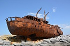

Plassy Shipwreck
The iconic Plassy shipwreck, Inis Oírr's most famous "blow-in", features in the opening credits of the popular comedy series, Fr Ted. This 1960s artifact is a "must see" for visitors to the island.
Inis Oírr is the smallest of the Aran islands and is easily accessed by a short 15 minute ferry ride from Doolin.The main pier where the ferry arrives is located next to a beautiful white sandy beach, clear crystal turquoise waters, fishing boats, with their nets, and fisherman returning at the end of the day with their catch.
The main village is next to the beach and is enclosed by a small hill with a castle and a fort at the top. The island is 3km by 3km wide with small hills and intricate little valleys. It is easily explored by foot, bicycle or traditional pony and trap. The walk to the lighthouse or the Plassy shipwreck afford great views of the diverse landscape.
The iconic Plassy shipwreck, Inis Oírr's most famous "blow-in", features in the opening credits of the popular comedy series, Fr Ted. This 1960s artifact is a "must see" for visitors to the island.
Between May and September every year, the otherwise barren landscape of Inis Oirr is abundant with colour as small plants begin to emerge between the grykes of the karst limestone areas and along the dry-stone walls of the island.
Two green coast awarded beaches, are wonderful bleached white strands. They are popular beaches for swimming, walking, water sports or just hanging about on long island summer days.